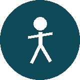
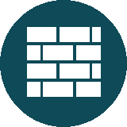
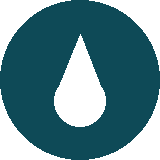
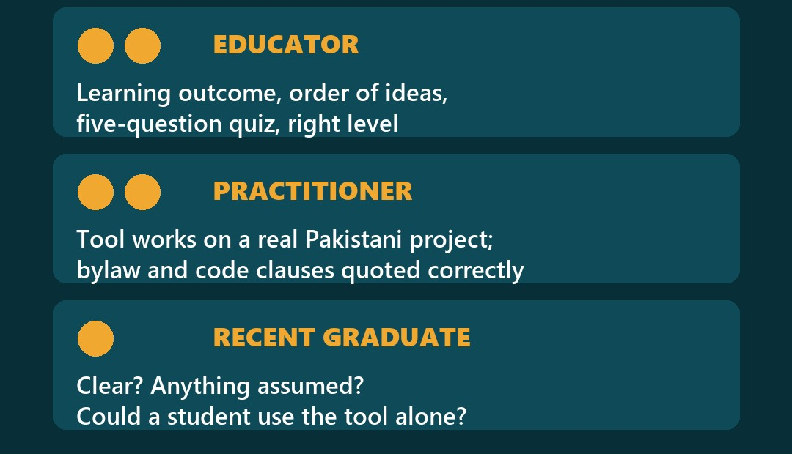
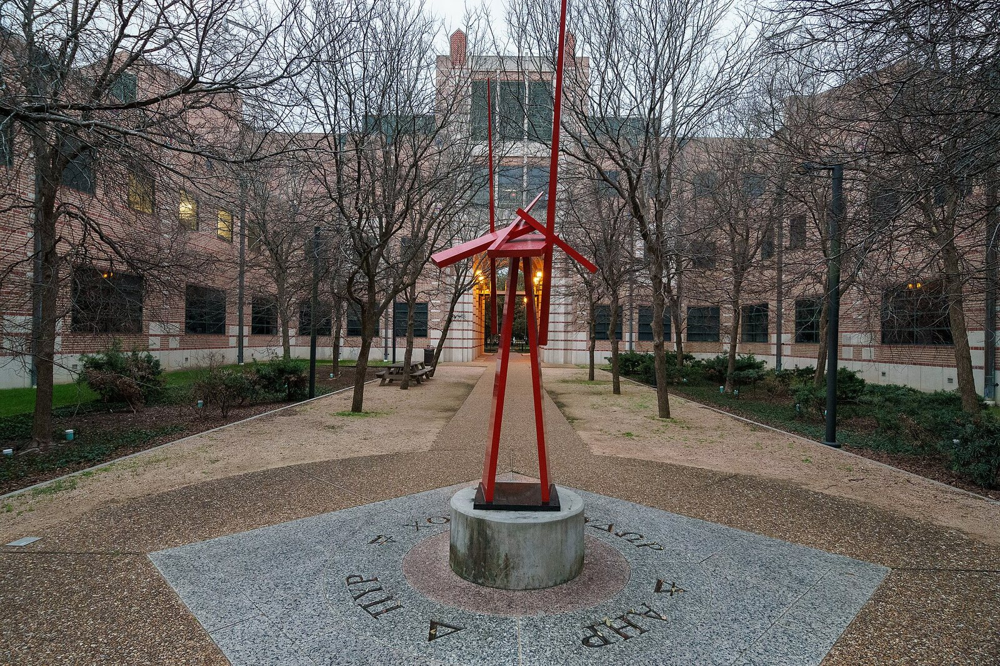
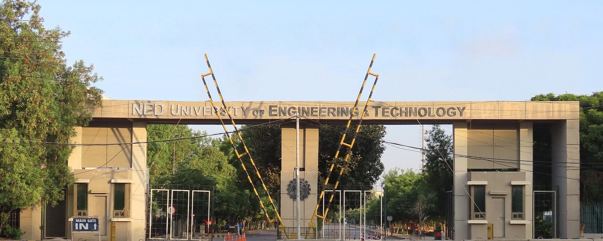
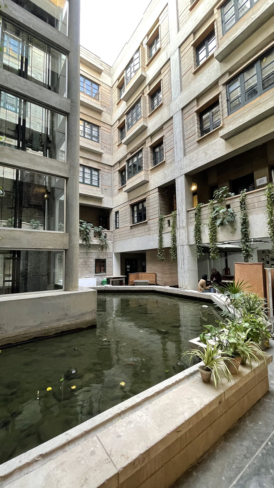

Who checks a free course before you see it?
Five reviewers, five checks, named credit only with permission. National College of Arts, Lahore (place photo). Photo: Muhammad Dawood Jawad, CC BY-SA 4.0, Wikimedia Commons
Why learning material needs outside eyes
What one author cannot see alone

Blind spots
Authors read what they meant, not what they wrote.
Level
Is it pitched for a 3rd- to 5th-year student?

Practice
Does the tool work on a real site?
Three safeguards good systems use
Mixed team
Teachers, practitioners and students see different errors.

No conflict
Reviewers declare any stake first.
Open errata
Readers report errors; experts check them.
Our view: review is a system, not a favour.
From world practice to one checklist
NAAB, which accredits US architecture degrees: teams of educator, practitioner, regulator, student.
OpenStax (Rice University): academic reviewers, peer review first.
PCATP lists 27 accredited B.Arch programmes (March 2026).
10 free modules, each checked on 5 lines.
The Advisory Panel
Each seat checks one thing well

Dots show the number of seats. Practitioner seats carry the code-citation check.
Five lines before a module goes live
Outcome clear
It teaches what it says it teaches.
Facts and clauses correct
Every figure and bylaw clause matches its source.
Tool usable
The brief template, checklist or process map works unaided.
Quiz fair
Five questions that test the outcome.
Urdu summary accurate
Where one is given.

OpenStax: named reviewers
Its Precalculus book: reviewers named, an accuracy team, experts review every errata report. Rice University. Photo: Kenneth C. Zirkel, CC BY 4.0

27 B.Arch programmes
PCATP, March 2026: Punjab 13, Sindh 8, KP 3, Islamabad 2, Balochistan 1. NED University, Karachi (place only). Photo: King Eliot, CC BY-SA 4.0

Spread across Pakistan
Our plan: 3+ provinces, public and private, one per school or firm. Indus Valley School, Karachi (place only). Photo: Crosji, CC BY-SA 4.0
From draft to correction note
Draft
Written from sourced research.
Panel check
Written comments on the 5 lines.
Founder approval
Every item, every time.
Publish
Reviewers credited only with permission.
Errors reported
Fixed with a visible correction note.
Do we need a regulator seat?
NAAB TEAM
- Educator
- Practitioner
- Regulator
- Student
- No-conflict step
OUR PANEL, FOR NOW
- 2 educators
- 2 practitioners (code checks)
- 1 recent graduate
- Regulator view later, for Code Fix
- Conflicts declared
Which check would you add before a module goes live?
Our five lines are above. Tell us the sixth, and why.
Answer in the comments of the post that brought you here, or share it with a colleague:
Rana Mohsin Ali · Archiverse-Pakistan · 11 November 2026
Sources: NAAB, How to Host a Successful On-Campus Site Visit, Spring 2025; OpenStax Help Center, authoring and peer-review process; OpenStax, Precalculus, Preface; PCATP, Accred.status.2026-008, March 2026; Archiverse growth strategy §3–§6; Archiverse panel invitation draft, 4 Nov 2026
Photos: National College of Arts, Lahore: Muhammad Dawood Jawad, CC BY-SA 4.0, via Wikimedia Commons (cropped); George R. Brown Hall, Rice University, Houston: Kenneth C. Zirkel, CC BY 4.0, via Wikimedia Commons; Main gate, NED University, Karachi: King Eliot, CC BY-SA 4.0, via Wikimedia Commons (cropped); Courtyard, Indus Valley School of Art and Architecture, Karachi: Crosji, CC BY-SA 4.0, via Wikimedia Commons